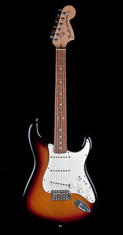

|  |
- Celé jméno: John Anthony Frusciante
- Narozen: 5. března 1970, New York
- Sídlo: Los Angeles
- Profese: kytarista a hudební producent
- Skupina: Red Hot Chili Peppers
- Oblíbená kytara: Fender Stratocaster (na obrázku)
|
žánry:
- Rock
- Indie rock
- Alternative rock
- Experimental rock
- Electronica
|